Hugo Alberto
LO PRIMERO QUE HAREMOS SERA IMPORTAR EL HUGO 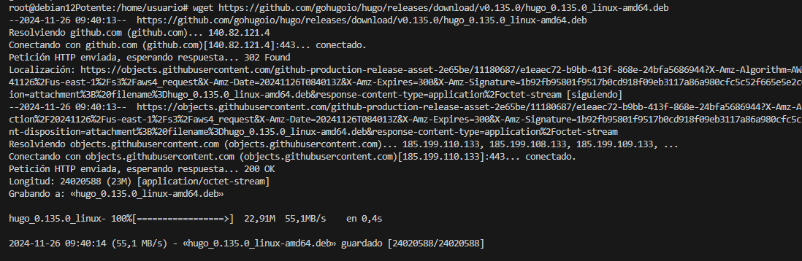
INSTALAMOS EL PAQUETE QUE ACABOS DE DESCARGAR 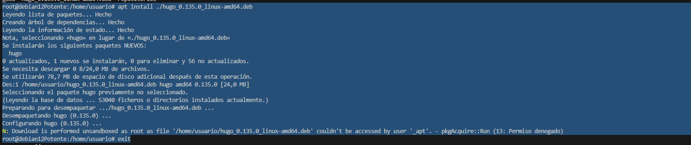
MIRAMOS QUE LA VERSION DE HUGO SEA LA CORRECTA 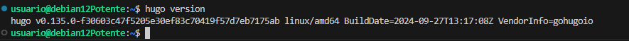
CREAMOS EL REPOSITORIO CON EL COMANDO "HUGO NEW SITE" 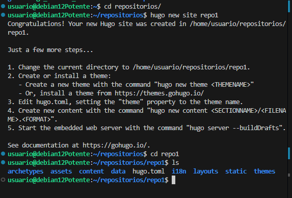
CARGAMOS EL TEMA DE ANANKE 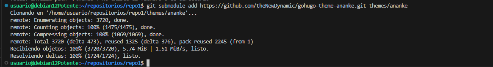
CREAMOS UN POST RELACIONADO CON LO QUE QUEREMOS PONER EN NUESTRO BLOG, EN MI CASO ES SOBRE COMO TENER UN BUEN DIA CON ALEGRIA 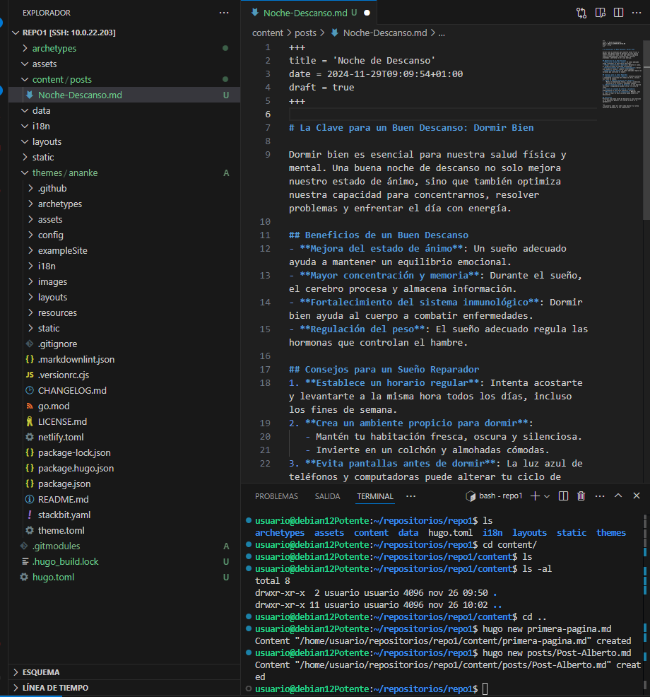
SUBIMOS EL SITIO A LOCAL 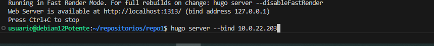
ESTE ES EL RESULTADO 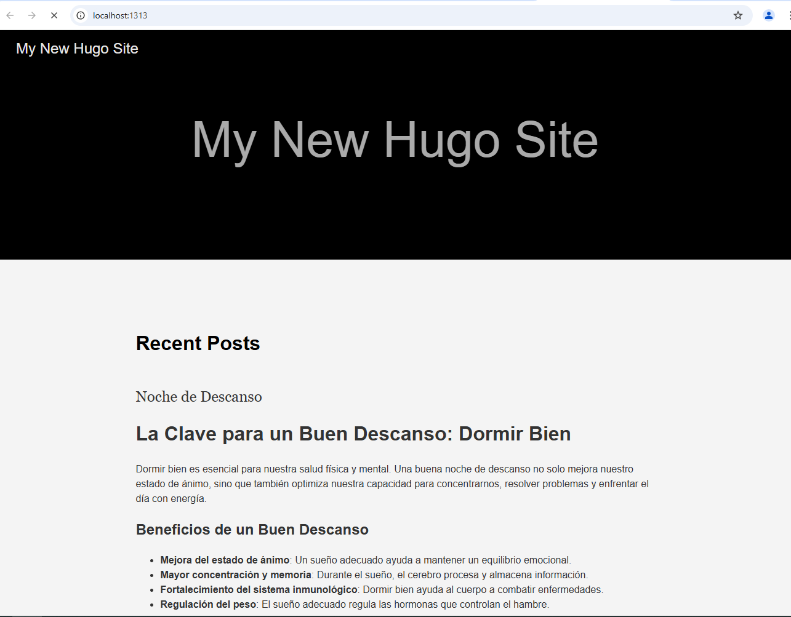
CREAMOS EL ARCHIVO PARA PODER DESPLEGAR NUESTRA PAGINA EN GITHUB PAGES 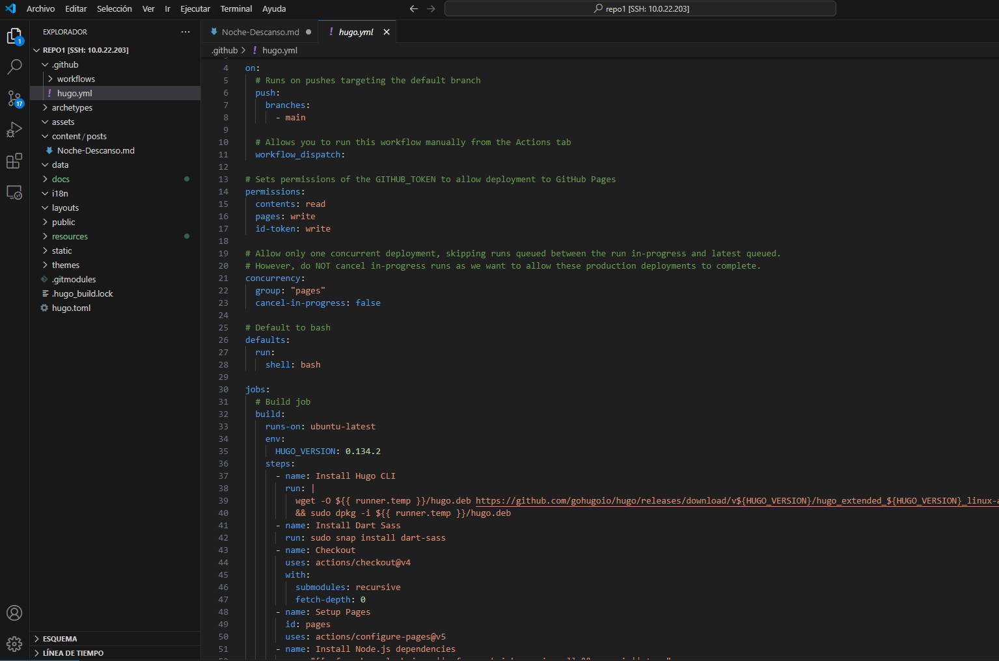
ASI SERIA COMO SE VERIA EN GITHUB PAGES 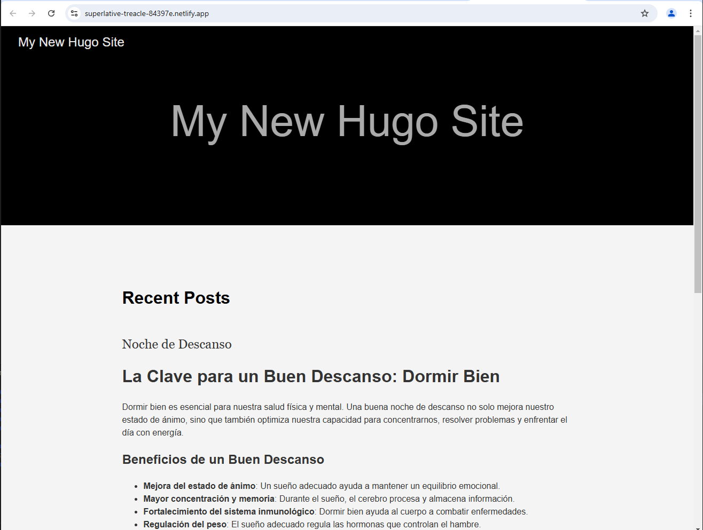
SUBIREMOS NUESTRO SITIO A NETIFLY 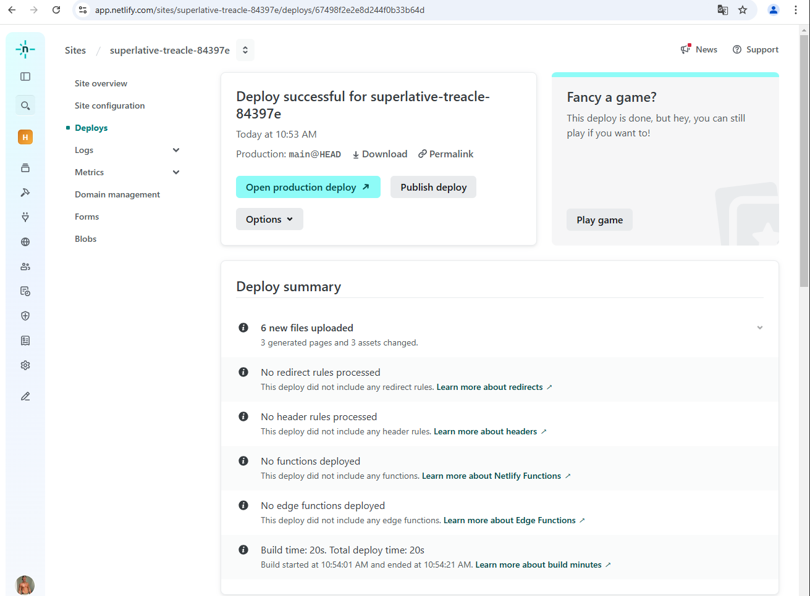
NOS QUEDARA UNA PAGINA TAL QUE ASI: 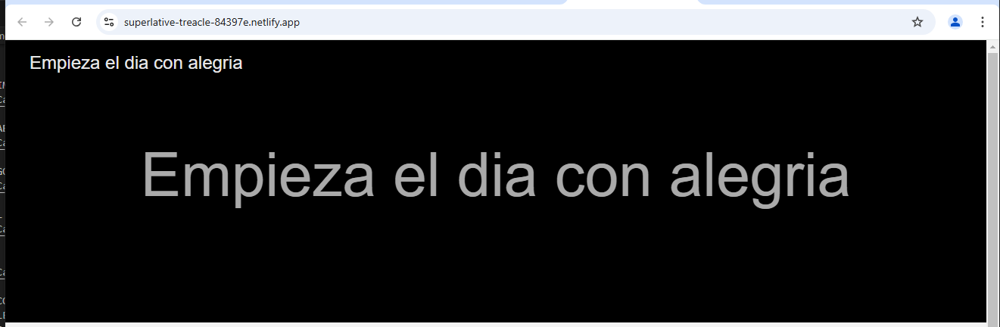